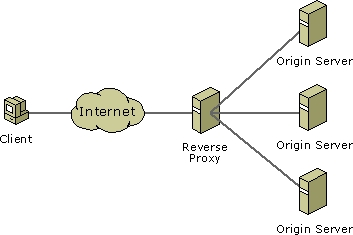

Web architecture
with docker-compose
Speaker : Benoit Tellier
Retrieve online : https://rawgit.com/Open-Up/openup02_07/master/presentation/index.html
And on GitHub
Objectives
- Revise docker
- Use NGinx as a reverse proxy
- Use SSL with NGinx
- Use docker-compose to deploy complex architecture
Docker revisions
Go on kahoot.it and wait for the game pin !
NGinx
What is a reverse proxy ?
Why a reverse proxy ?
- Cache
- Compression
- SSL
- Load balancing
- Only one access point from the internet
NGinx

Web server and reverse proxy
Lightweight and performant
apt-get install nginx/etc/init.d/nginx start | stop | restartMain configuration in /etc/nginx/nginx.conf
Example of configuration
user www-data ;
worker_processes 2 ;
events
{
worker_connections 512 ;
}
http
{
sendfile on ;
include nginx.conf-server ;
include nginx.conf-relays ;
}Configuration as webserver
server
{
listen [::]:80 ;
server_name www.example.com ;
location /
{
root /usr/share/nginx/www ;
}
access_log /var/log/nginx/www.example.com-access.log ;
error_log /var/log/nginx/www.example.com-error.log ;
}Configuration as reverse proxy
server
{
listen [::]:80 ;
server_name www.example.org ;
location /
{
proxy_pass http://www.example.com ;
}
access_log /var/log/nginx/www.example.org-access.log ;
error_log /var/log/nginx/www.example.org-error.log ;
}NGinx command
# Control NGinx
nginx -s stop
nginx -s quit
nginx -s reload
nginx -s reopen
# Verify syntax
nginx -t
# Informations
nginx -v
nginx -VSSL
Why would I bother ?
- Server authentication
- Encrypted data
- Data validation
Generate SSL key
$ openssl genrsa -des3 -out admin-serv.net.key 2048
Generating RSA private key, 2048 bit long modulus
...........+++
.....................................................................................+++
e is 65537 (0x10001)
Enter pass phrase for admin-serv.net.key:
Verifying - Enter pass phrase for admin-serv.net.key:Generate SSL certificate
$ openssl req -new -key admin-serv.net.key -out admin-serv.net.csr
Enter pass phrase for admin-serv.net.key:
...
Country Name (2 letter code) [AU]:FR
State or Province Name (full name) [Some-State]:Paris
Locality Name (eg, city) []:Paris
Organization Name (eg, company) [Internet Widgits Pty Ltd]:Tellier Benoit
Organizational Unit Name (eg, section) []:
Common Name (e.g. server FQDN or YOUR name) []:btellier.com
Email Address []:benwa@minet.net
Please enter the following 'extra' attributesDisable password on the key
$ openssl rsa -in admin-serv.net.key -out admin-serv.net.deprotected.key
Enter pass phrase for admin-serv.net.key:
writing RSA keyGet a certification
$ cat admin-serv.crt rapidssl.ca.crt > certificate.admin-serv.net.crtSelf signature
$ openssl x509 -req -days 365 -in admin-serv.net.csr -signkey admin-serv.net.key -out admin-serv.net.csr
Signature ok
subject=/C=FR/ST=Paris/L=Paris/O=Tellier Benoit/CN=btellier.com/emailAddress=benwa@minet.net
Getting Private key
Enter pass phrase for admin-serv.net.key:Use these certificate with NGinx
$ nano /etc/nginx/sites-enabled/any
server {
listen 443;
server_name admin-serv.net;
ssl on;
ssl_certificate /etc/nginx/ssl/certificate.admin-serv.net.crt;
ssl_certificate_key /etc/nginx/ssl/admin-serv.net.deprotected.key;
location / {
root /var/www/;
index index.html;
}
}docker compose
Why docker-compose ?

Declare your dependencies between docker containers
Launch complex applications in one command
How does it works ?
- Edit a docker-compose.yaml file
- Which containers to deploy ?
- Where you can find their images ?
- Links between containers
- Exposed ports
- Volumes
- On which containers do they depend ?
version: '2'
services:
esn:
build: ../../../
container_name: esn
ports:
- "8080:8080"
links:
- redis
- mongo
- james
- elasticsearch
redis:
image: redis:latest
ports:
- "6379:6379"
mongo:
image: mongo:2.6.5
ports:
- "27017:27017"
elasticsearch:
image: linagora/esn-elasticsearch:latest
ports:
- "9200:9200"
james:
image: linagora/james-project:latest
container_name: esn_james
ports:
- "1080:80"
- "1025:25"
- "1143:143"
links:
- cassandra:cassandra
- elasticsearch:elasticsearch
depends_on:
- cassandra
- elasticsearch
cassandra:
image: cassandra:2.2.3